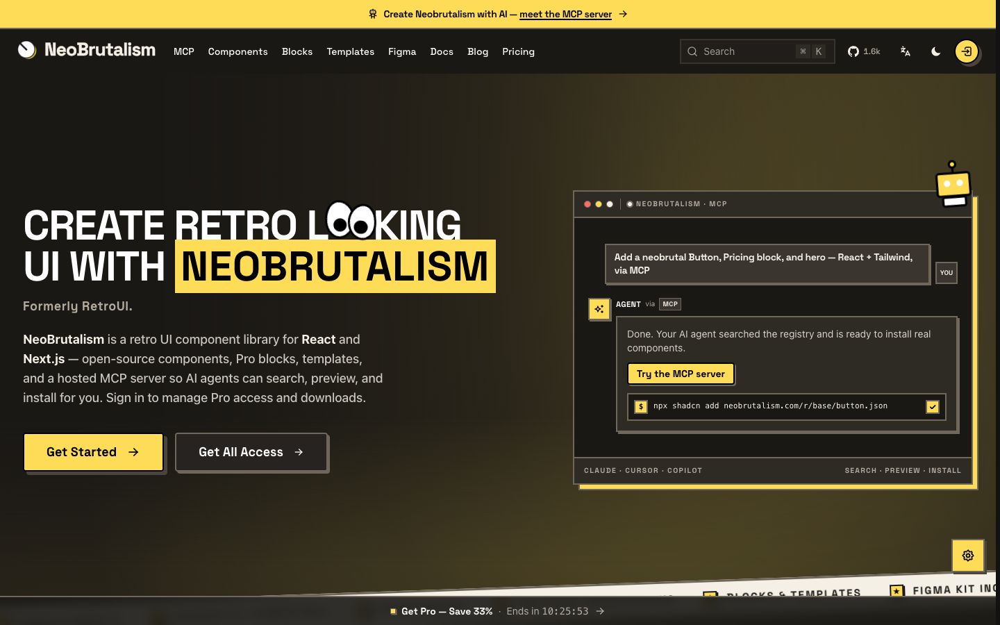

References / Website / 48
NeoBrutalism website (formerly RetroUI)
The site of a React component library that renamed itself from RetroUI to NeoBrutalism, now in a dark theme.
- Source
- neobrutalism.com (archived copy)
- Creator
- Arif Hossain
- Made
- 2024–present
- Style
- Neo-brutalism (agent-proposed, not yet reviewed by a person)
- Moods
- Retro, direct, loud
- Evidence
- Captured with
tools/capture.mjs(headless Chrome, 1440 × 900) on 25 September 2026 and inspected. The screenshot shows the first viewport; the measurement covers up to four screens. retroui.dev redirected to neobrutalism.com. - Reviewed
- Rights
- Third-party work, stored with credit for commentary. License: unverified. Rights policy
retroui.dev now redirects here. The earlier banner in the RetroUI record shows a light theme.
Observed
- Near-black background with a warm radial glow. The top announcement bar is flat yellow.
- Headline in heavy uppercase display type, with “NEOBRUTALISM” set on a flat yellow block.
- Get Started is a yellow button with an outline and a hard shadow. Get All Access is dark with a light outline.
- A mock agent window has a thin light frame with a yellow hard shadow.
- A cream band set at a slight angle carries a monospaced marquee of feature labels.
Why it belongs
Shows that the style survives a dark theme when outlines, hard shadows, and flat brights stay. It is also evidence that the neo-brutalism name now carries commercial value.
Borrow
In dark mode, invert the outline color but keep the hard shadow offset and the flat accent.
Measured
Machine-extracted by tools/extract-traits.js on . Full measurement.
- Type families
- -apple-system (70%), Space Grotesk (29%), Geist (1%)
- Type scale ratio
- 1.07
- Median radius
- 0 px
- Mean chroma
- 0.05
- Palette
- #1a1815 65%
- #262320 13%
- #f5f0e6 11%
- #ffffff 4%
- #ffdc58 4%
- #b3ac9e 3%
- #3a352f 1%
- #000000 0%

